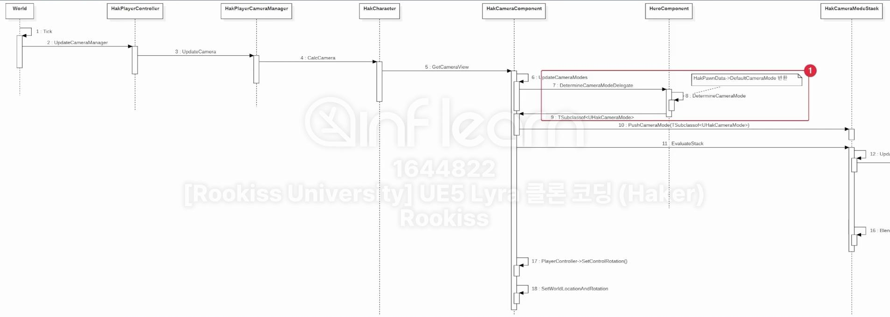
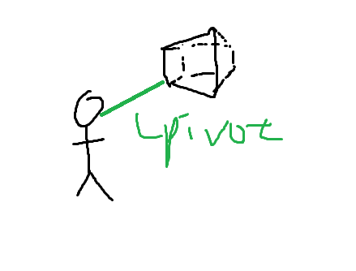
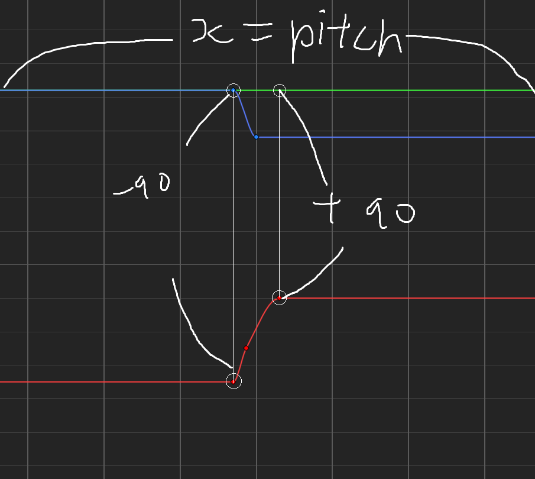
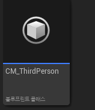
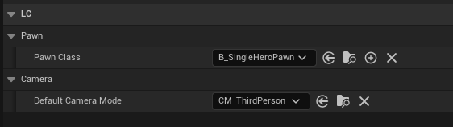
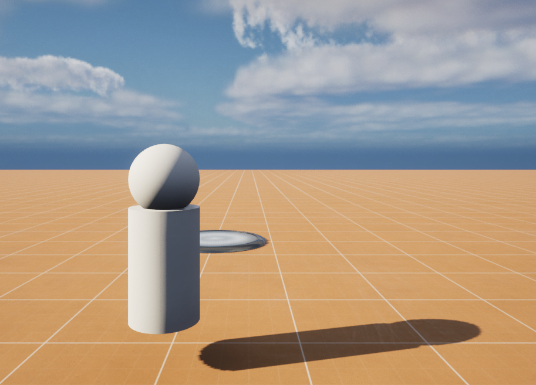

게임의 모듈화를 통해 다양한 게임을 편하게 만들기위해 플레이어의 게임경험의 기본이 되는 카메라를 모듈화한다.
Lyra에서는 CameraMode라는 개념을 만들고 해당 모드를 교체해가며 플레이어가 화면을 보는 방식을 결정한다.
Ex) Fps모드, Tps모드, 스나이퍼모드 등등
또한 CameraMode간의 전환을 보간을 통해 자연스럽게 하는 개념을 Camera Blending이라고 부른다.
이 CameraMode들은 CameraComponent가 들고 있고 CameraComponent 는 Player가 사용할 Pawn에 부착된다.
아래는 참고사항이다

카메라 컴포넌트는 다른 컴포넌트와 다르게 WorldTick에서 Update되는게 아니라 PlayerController를 통해 Update된다.카메라 컴포넌트가 Scene을 찍긴 하지만 렌더링은 담당하지 않고, 해당 정보들을 종합해서 CameraManager에게 전달하면CameraManager가 렌더링을 한다. ⇒ Player의 Controller이나 Pawn등은 너무 가변적이어서 Component가 맡게되면렌더링에 문제가 생길수 있다. 그래서 Player에게 종속시키지않고 CameraManager가 담당하면 보다 안전하다.
초기화
void ULCCameraComponent::OnRegister()
{
Super::OnRegister();
if (!CameraModeStack)
{
// 초기화(Beginplay같은)가 필요없는 객체이기 때문에 NewObject로 할당
// Constructor가 아니라 OnRegister에서 하기 때문에 LCCharacter에 CameraComponent가 부착되고 난 다음에 CameraModeStack이 생성된다.
CameraModeStack = NewObject<ULCCameraModeStack>(this);
}
}
// 매 프레임 호출!
void ULCCameraComponent::GetCameraView(float DeltaTime, FMinimalViewInfo& DesiredView)
{
//Super::GetCameraView(DeltaTime, DesiredView);
check(CameraModeStack);
UpdateCameraModes();
// EvaluateStack은 CameraStack에 있는 CameraMode를 업데이트,
// 블렌딩 하고 CameraModeStack의 Bottom->Top까지 업데이트된 CameraMode에 대해 보간을 진행한다.
// 이에 대한 결과는 CameraModeView에 캐싱된다.
FLCCameraModeView CameraModeView;
CameraModeStack->EvaluateStack(DeltaTime, CameraModeView);
}
void ULCCameraComponent::UpdateCameraModes()
{
check(CameraModeStack);
// DetermineCameraModeDelegate
// DECLARE_DELEGATE_RetVal(TSubclassOf<class ULCCameraMode>, FLCCameraModeDelegate)
// DetermineCameraModeDelegate is Bound To HeroComponent::DetermineCameraModeDelegate
if (DetermineCameraModeDelegate.IsBound())
{
// 현재 pawndata의 DefaultCameramode를 return한다.
if (const TSubclassOf<ULCCameraMode> CameraMode = DetermineCameraModeDelegate.Execute())
{
CameraModeStack->PushCameraMode(CameraMode);
}
}
}
위 코드를 보면 매 프레임 호출되는 GetCameraView 함수를 통해 UpdateCameraModes함수가 호출된다.
그리고 CameraModeStack에 계속 CameraMode를 추가해주는것을 볼 수 있다.
ULCHeroComponent::DetermineCameraMode
TSubclassOf< ULCCameraMode> ULCHeroComponent::DetermineCameraMode() const
{
APawn* Pawn = GetPawn<APawn>();
if (!Pawn)
{
return nullptr;
}
if (ULCPawnExtensionComponent* PawnExtensionComponent = ULCPawnExtensionComponent::FindPawnExtensionComponent(Pawn))
{
if (const ULCPawnData* PawnData = PawnExtensionComponent->GetPawnData<ULCPawnData>())
{
return PawnData->DefaultCameraMode;
}
}
return nullptr;
}
DetermineCameraMode함수는 DefaultCameraMode 즉 현재 사용중인 CameraMode를 반환한다.DetermineCameraMode함수는 앞서 InitState를 진행하다 만나는 HandleChangeInitState 함수에서 진행하게 된다.
void ULCHeroComponent::HandleChangeInitState(UGameFrameworkComponentManager* Manager, FGameplayTag CurrentState,
FGameplayTag DesiredState)
{
const FLCGameplayTags& InitTags = FLCGameplayTags::Get();
...
// Input, Camera Handling
...
if (bIsLocallyControlled && PawnData)
{
if ( ULCCameraComponent* CameraComponent = ULCCameraComponent::FindCameraComponent(Pawn))
{
CameraComponent->DetermineCameraModeDelegate.BindUObject(this, &ThisClass::DetermineCameraMode);
}
}
}
}
ULCCameraComponent::UpdateCameraModes 에서 계속 호출되는 함수들이다.
함수를 보면 PushCameraMode 에서 인자로 들어온 현재 PawnData의 DefaultCameraMode 를GetCameraModeInstance 함수로 보내고
GetCameraModeInstance 함수에서 해당 CameraModeClass 기반으로 만들어진 CameraModeInstance를 캐싱하고 있는것을 확인할 수 있다.
캐싱되었거나 캐싱되있던 CameraMode를 가져와서 PushCameraMode 에서 사용한다.
PushCameraMode 함수는 새로 들어왔거나 기존에 있던 CameraMode가 들어왔을때
해당 CameraMode에 Blend가중치를 설정하는 역할을 한다.
해당 계산 과정에 대해선 더 아래서 설명한다.
ULCCameraMode* ULCCameraModeStack::GetCameraModeInstance(TSubclassOf<ULCCameraMode>& CameraModeClass)
{
check(CameraModeClass);
// 같은 클래스의 카메라 모드 인스턴스가 이미 있으면 재사용한다.
for (ULCCameraMode* CameraMode : CameraModeInstance)
{
if ((CameraMode != nullptr) && (CameraMode->GetClass() == CameraModeClass))
{
return CameraMode;
}
}
// 없으면 새로 생성하고 캐시에 등록한다.
ULCCameraMode* NewCameraMode = NewObject<ULCCameraMode>(GetOuter(), CameraModeClass, NAME_None, RF_NoFlags);
check(NewCameraMode);
CameraModeInstance.Add(NewCameraMode);
return NewCameraMode;
}
void ULCCameraModeStack::PushCameraMode(TSubclassOf<ULCCameraMode> CameraModeClass)
{
if (!CameraModeClass)
{
return;
}
// 클래스별 단일 인스턴스를 가져온다.
ULCCameraMode* CameraMode = GetCameraModeInstance(CameraModeClass);
check(CameraMode);
int32 StackSize = CameraModeStack.Num();
// 이미 최상단에 있으면 순서도, 블렌드 상태도 바꿀 필요가 없다.
if ((StackSize > 0) && (CameraModeStack[0] == CameraMode))
{
return;
}
int32 ExistingStackIndex = INDEX_NONE;
float ExistingStackContribution = 1.0f;
// 스택을 위에서 아래로 탐색하면서
// 1) 같은 모드가 기존에 어디 있었는지 찾고
// 2) 그 모드가 현재 최종 결과에 실제로 얼마나 기여하고 있었는지 계산한다.
for (int32 StackIndex = 0; StackIndex < StackSize; ++StackIndex)
{
if (CameraModeStack[StackIndex] == CameraMode)
{
ExistingStackIndex = StackIndex;
// 지금까지 위쪽 모드들이 남긴 영역에서
// 이 모드가 실제로 차지하던 비율을 계산한다.
ExistingStackContribution *= CameraMode->BlendWeight;
break;
}
// 아직 찾는 모드가 아니므로,
// 현재 모드가 덮고 남긴 비율만 다음 단계로 넘긴다.
ExistingStackContribution *= (1.0f - CameraModeStack[StackIndex]->BlendWeight);
}
// 기존에 스택 안에 있던 모드면 제거 후 최상단으로 다시 올린다.
if (ExistingStackIndex != INDEX_NONE)
{
CameraModeStack.RemoveAt(ExistingStackIndex);
StackSize--;
}
else
{
// 새 모드라면 기존 기여도가 없으므로 0에서 시작한다.
ExistingStackContribution = 0.0f;
}
// 블렌드 가능한 상황이면 기존 기여도에서 이어서 시작하고,
// 아니면 즉시 최상단 모드가 되도록 1.0으로 시작한다.
const bool bShouldBlend = ((CameraMode->BlendTime > 0.f) && (StackSize > 0));
const float BlendWeight = (bShouldBlend ? ExistingStackContribution : 1.0f);
CameraMode->BlendWeight = BlendWeight;
// 새로 활성화된 모드는 항상 스택 최상단에 둔다.
CameraModeStack.Insert(CameraMode, 0);
// 최하단 모드는 남은 영역을 전부 책임져야 하므로 항상 1.0이어야 한다.
CameraModeStack.Last()->BlendWeight = 1.0f;
}
그 이후 ULCCameraComponent::GetCameraView 함수로 돌아가서 EvaluateStack 을 진행하게 된다.
void ULCCameraModeStack::EvaluateStack(float DeltaTime, FLCCameraModeView& OutCameraModeView)
{
// Top -> Bottom [0 -> Num]까지 순차적으로 Stack에 있는 Camera Update
UpdateStack(DeltaTime);
// Bottom -> Top까지 CameraModeStack에 대해 Blending 진행
BlendStack(OutCameraModeView);
}
UpdateStack
UpdateStack 함수는 CameraModeStack을 가장 최신의 CameraMode부터 가장 오래된 CameraMode까지 순회하며 UpdateCameraMode함수를 호출해준다.
그리고 블렌딩이 완료된 카메라모드는 Stack에서 제거한다.
void ULCCameraModeStack::UpdateStack(float DeltaTime)
{
// 카메라 모드 스택이 비어있으면 할 필요 없음
const int32 StackSize = CameraModeStack.Num();
if (StackSize <= 0)
{
return;
}
// CameraModeStack을 순회하며, CameraMode를 업데이트한다
// (가장 최신 데이터부터 가장 나중 데이터까지 순회)
// 현재 내가 쓰고있는 데이터부터 썼던데이터들을 쭉 돌아보는것
int32 RemoveCount = 0;
int32 RemoveIndex = INDEX_NONE;
for (int32 StackIndex = 0; StackIndex < StackSize; ++StackIndex)
{
ULCCameraMode* CameraMode = CameraModeStack[StackIndex];
check(CameraMode);
// UpdateCameraMode를 확인해보자:
CameraMode->UpdateCameraMode(DeltaTime);
// 만약 하나라도 CameraMode가 BlendWeight가 1.0에 도달했다면,
// 그 이후 모든 CameraMode를 제거한다
if (CameraMode->BlendWeight >= 1.0f)
{
RemoveIndex = (StackIndex + 1);
RemoveCount = (StackSize - RemoveIndex);
break;
}
}
if (RemoveCount > 0)
{
// 생각해보면 이거 때문에 Pop하고 Push를 안한거일지도?
CameraModeStack.RemoveAt(RemoveIndex, RemoveCount);
}
}
UpdateCameraMode
void ULCCameraMode::UpdateCameraMode(float DeltaTime)
{
// Actor를 활용하여, Pivot[Location,Rotation]을 계산하여 View 업데이트
UpdateView(DeltaTime);
// BlendingWeight, Deltatime을 활용하여 BlendAlpha 계산후 BlendFunction에 맞게
// 재매핑하여 최종 계산
UpdateBlending(DeltaTime);
}
void ULCCameraMode::UpdateView(float DeltaTime)
{
// OwnerPawn의 Location과 ControlRotation을 활용하여 View업데이트
// CameraMode를 가지고 있는 CameraComp의 Owner인 Character를 활용하여 Loc, Rot를 반환함
FVector PivotLocation = GetPivotLocation();
FRotator PivotRotation = GetPivotRotation();
// Pitch값에 대해 MinMax Clamp
PivotRotation.Pitch = FMath::ClampAngle(PivotRotation.Pitch, ViewPitchMin, ViewPitchMax);
// CameraView에 해당 Loc Rot 사용
View.Location = PivotLocation;
View.Rotation = PivotRotation;
// ControlRotation을 Pivot으로 사용
View.ControlRotation = PivotRotation;
View.FieldOfView = FieldOfView;
}
void ULCCameraMode::UpdateBlending(float DeltaTime)
{
// BlendAlpha를 DeltaTime을 통해 계산
if (BlendTime > 0.f)
{
// BlendTime은 Blending 하는 과정 (초)
// BlendAlpha는 Blending Elapse
BlendAlpha += (DeltaTime / BlendTime); // BlendTime초가 지나면 BlendAlpha가 1이 되어있음
}
else
{
BlendAlpha = 1.f;
}
// BlendWeight를 BlendFunction에 맞게 재매핑
const float Exponent = (BlendExponent > 0.f) ? BlendExponent : 1.f;
switch (BlendFunction)
{
case ELCCameraModeBlendFunction::Linear:
BlendWeight = BlendAlpha;
break;
case ELCCameraModeBlendFunction::EaseIn:
BlendWeight = FMath::InterpEaseIn(0.f ,1.f, BlendAlpha, Exponent);
break;
case ELCCameraModeBlendFunction::EaseOut:
BlendWeight = FMath::InterpEaseOut(0.f ,1.f, BlendAlpha, Exponent);
break;
case ELCCameraModeBlendFunction::EaseInOut:
BlendWeight = FMath::InterpEaseInOut(0.f ,1.f, BlendAlpha, Exponent);
break;
default:
checkf(false, TEXT("UpdateBlending : Invalid BlendFunction [%d]\n"), static_cast<uint8>(BlendFunction));
break;
}
}
CCameraComponent* ULCCameraMode::GetLCCameraComponent() const
{
// 이 코드는 아래서 설명한다.
return CastChecked<ULCCameraComponent>(GetOuter());
}
AActor* ULCCameraMode::GetTargetActor() const
{
const ULCCameraComponent* LCCameraComponent = GetLCCameraComponent();
return LCCameraComponent->GetTargetActor();
}
FVector ULCCameraMode::GetPivotLocation() const
{
const AActor* TargetActor = GetTargetActor();
check(TargetActor);
if (const APawn* TargetPawn = Cast<APawn>(TargetActor))
{
// BaseEyeHeigh(보통88)을 고려하여 ViewLocation을 반환
return TargetPawn->GetPawnViewLocation();
}
return TargetActor->GetActorLocation();
}
FRotator ULCCameraMode::GetPivotRotation() const
{
const AActor* TargetActor = GetTargetActor();
check(TargetActor);
if (const APawn* TargetPawn = Cast<APawn>(TargetActor))
{
// 보통 Pawn의 ContolRotation반환 ContolRotation(마우스의 이동이 컨트롤러에 적용이되는데 그곳에있는 Rotation을 가져옴)
return TargetPawn->GetViewRotation();
}
return TargetActor->GetActorRotation();
}
여기서 나오는 Pivot은 SpringArm을 생각하면 쉽다.
OwnerPawn의 움직임에 따라 카메라 위치와 회전이 변하는것

근데 여기서 CameraComponent와 그의 OwnerPawn을 가져오려면 일단 CameraComponent를 알아야한다.
그런데 CameraMode는 그냥 UObject이기때문에 알 수가 없다.
그래서 CameraModeStack에서 CameraModeClassType으로 CameraMode를 만들거나 찾아오던 함수인 ULCCameraModeStack::GetCameraModeInstance 에서 CameraMode를 만들 때
ULCCameraMode* NewCameraMode =
NewObject<ULCCameraMode>(GetOuter(), CameraModeClass, NAME_None, RF_NoFlags);
이렇게 CameraModeStack의 Outer을 넣어줬었다! 그리고 CameraModeStack->Outer 은
void ULCCameraComponent::OnRegister()
{
Super::OnRegister();
if (!CameraModeStack)
{
CameraModeStack = NewObject<ULCCameraModeStack>(this);
}
}
ULCCameraComponent 이다!
그래서 CameraMode에서 GetOuter하면 현재 캐릭터에 붙어있는 CameraComponent 를 가지고 올 수 있다.
CustomCameraMode를 만들고 적용시켜보자!
아래의 LCCameraMode_ThirdPerson 클래스를보자
UCLASS(Abstract, Blueprintable)
class LYRACLONE_API ULCCameraMode_ThirdPerson : public ULCCameraMode
{
GENERATED_BODY()
public:
ULCCameraMode_ThirdPerson(const FObjectInitializer& ObjectInitializer);
/*
* ULCCameraMode Interface
*/
virtual void UpdateView(float DeltaTime) override;
/*
* Member Variables
*/
UPROPERTY(EditDefaultsOnly, Category = "Third Person")
TObjectPtr<const class UCurveVector> TargetOffsetCurve;
};
기본적으로 CameraMode는 Abstract 키워드로 자체 인스턴스 생성을 막아두었다.
Blueprint사용을 권장하는것으로 보인다.
UpdateBlending 함수는 Blending로직은 대부분 똑같을것이기 때문에 부모함수로 쓰고
View는 카메라마다 다르게 가져가기 때문에 UpdateView를 상속받아 사용한다.
void ULCCameraMode_ThirdPerson::UpdateView(float DeltaTime)
{
FVector PivotLocation = GetPivotLocation();
FRotator PivotRotation = GetPivotRotation();
PivotRotation.Pitch = FMath::ClampAngle(PivotRotation.Pitch, ViewPitchMin, ViewPitchMax);
View.Location = PivotLocation;
View.Rotation = PivotRotation;
View.ControlRotation = PivotRotation;
View.FieldOfView = FieldOfView;
// TargetOffsetCurve가 오버라이드 되어있으면 Curve에 값을 가져와서 적용 진행
// -Camera관점에서 Character의 어느 부분에 Target으로 할 지 결정하는 것으로 이해하면 됨
if (TargetOffsetCurve)
{
// Pitch값에 따른 Offset값 가져옴
const FVector TargetOffset = TargetOffsetCurve->GetVectorValue(PivotRotation.Pitch);
// 현재 액터 위치로부터 회전방향으로 더해줌
View.Location = PivotLocation + PivotRotation.RotateVector(TargetOffset);
}
}
코드를 보면 Pitch값에 따라 Curve에서 벡터를 가져오게 되는데

x축이 pitch값이고 해당 축 위의 xyz값을 가져오는것


ULCCameraMode_ThirdPerson 를 상속받아 Blueprint를 만들고 기존에 사용중이던 PawnDataAsset에
BP로 만든 CameraMode를 바인딩한다.
